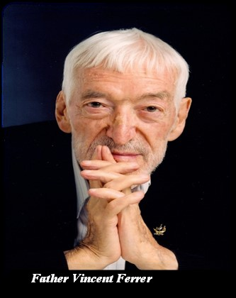
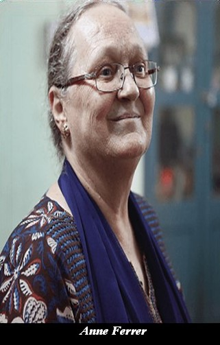

In 1969 after a brief stay in Spain, Vicente Ferrer, along with Anne Perry, a journalist from Mumbai who had joined his cause, and two other volunteers arrived moved to Anantapur and co-founded the Rural Development Trust (RDT). A year later, he married Anne Perry. He received numerous recognitions and accolades in India and internationally for his work. Most notably, he was nominated for the Nobel Peace Prize in 2010. He penned his thoughts in two books, An Encounter with Reality (in Spanish) and the posthumous The Power of Action. He passed away in 2009 and lakhs of people from Anantapur, other parts of India and abroad attended his funeral. His legacy continues to live through RDT and its work.

Anne Perry was born in Essex, England in 1947 and has been residing in India for almost 60 years and is currently an Indian citizen. At the age of 16, as part of an adventurous journey by car with her family, she arrived in India, where she completed her studies and started working as a journalist in a Mumbai-based news magazine Current. She met Vicente Ferrer during an interview in 1968 and got stirred by his philosophy and work for the disadvantaged communities in Manmad, Maharashtra. Ms. Ferrer has also been actively involved in interventions in ecology, livelihoods, habitat, and area development. Currently she is the Executive Director of RDT as well as the President of Fundación Vicente Ferrer in Spain. Anne Ferrer is the recipient of the Jamnalal Bajaj 2015 award for the development of women and children and the Hamsa Award 2015 given by the Andhra Pradesh Government for her contribution to rural development.